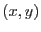

XMM-Newton Science Analysis System
omdrifthist (omdrifthist-1.29) [xmmsas_20170112_1337-16.0.0]
Description
This task provides graphical and statistical information on the OM
tracking history. This information will enable the observer to assess
the effects of the DPU `shift and add' procedure on the OM PSF. The
input file is the pipeline(omprep)-prepared OM tracking history auxiliary file from a
single exposure, which contains an  pointing position (as measured
from the tracking stars) for each tracking frame. The resulting plot,
which is PPS product OM postscript tracking history plot, contains
statistics on the tracking history, a spot diagrams
of the incremental drift-size, and two histograms showing the
distribution of spacecraft pointing in  and
and  .
.
XMM-Newton SOC/SSC -- 2017-01-12